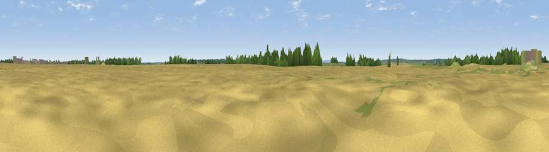

Viewpoint near Saltby
#44528 in England · top 92% of its area beats it · near SaltbyWhere it is
The exact computed spot (SK 86275 25685). Click the marker for map links.
The view, rendered

A 360° render of this exact spot computed from the terrain model, tree cover and land cover — summer colours, afternoon light, calibrated against photographs of famous viewpoints. Real trees, hedges and buildings will differ in detail.
The panorama
Grey silhouette: terrain skyline in each direction (720 bearings, Earth curvature and refraction included). Dashed green: skyline with trees (+15 m) and buildings (+8 m) as obstacles. Blue strip: how far the ground is visible on each bearing.
Where the view opens
Wedge length = distance to the farthest visible ground on that bearing (vegetation-aware). Rings at 10, 25 and 50 km.
What fills the view
73% cropland · 21% grassland · 5% woodland ·
Angular shares of the visible panorama (visual magnitude), not map area. Landscape diversity 0.33 (0–1 Shannon).
Key numbers
More beautiful places nearby
The staircase of upgrades: each row has a higher view potential than everything closer. Driving times are estimates from straight-line distance, calibrated against real road routing — check an actual route before setting out.
| Place | Direction | Drive | Score |
|---|---|---|---|
| Buckminster Hill | SE · 3 km | ~8 min | 30.3 |
| Viewpoint near Branston | NW · 5 km | ~12 min | 39.0 |
| Viewpoint near Knipton | NW · 9 km | ~17 min | 66.2 |
| Viewpoint near Belvoir | NNW · 9 km | ~18 min | 68.9 |
| Viewpoint near Belvoir | NNW · 9 km | ~18 min | 70.8 |
| Broombriggs Hill | WSW · 37 km | ~55 min | 74.4 |
| Viewpoint near Woodhouse Eaves | WSW · 37 km | ~55 min | 77.7 |
| Viewpoint near Mow Cop | WNW · 105 km | ~130 min | 78.9 |
52.82180, -0.72115 · source: osm peak · position refined by local search. Computed location — check access rights before visiting.